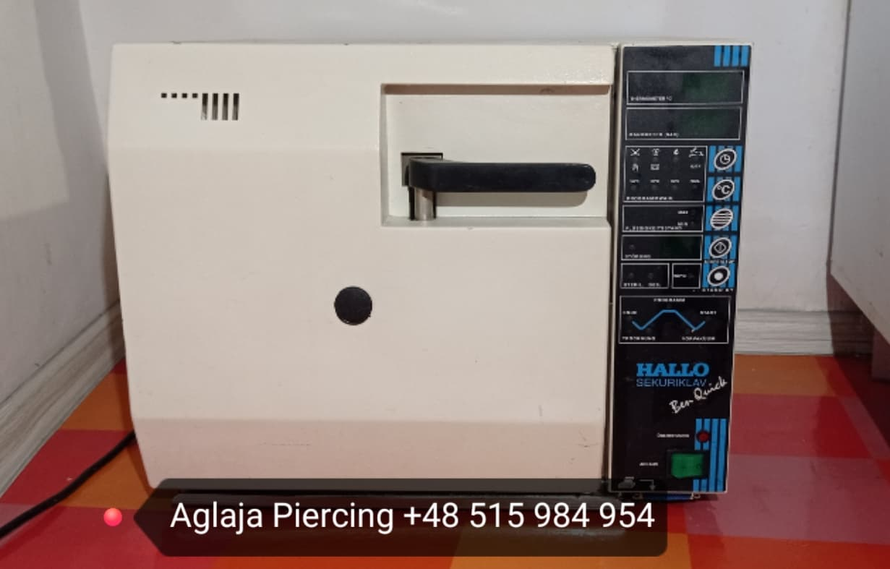
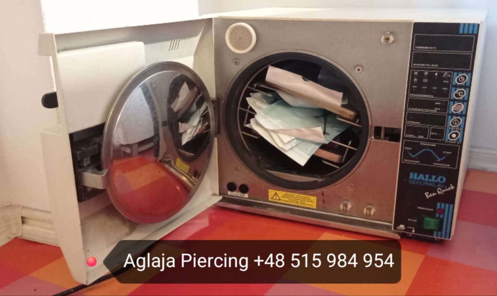

Czego NIE zrobię?
Nie wykonam przekłuć które są zagrożeniem dla zdrowia i życia, jak snake eyes i vertical tragus. Nie wykonam także przekłucia w języku, jeśli wędzidełko jest zbyt długie. Nie założę także na świeże przekłucie kółka lub podkówki, ani labreta ze stożkami zamiast kulek. O sterylność nie musisz się martwić - mam autoklaw a igły, kolczyki i rękawiczki są sterylne.


Lista przekłuć
Jak przygotować się na przekłucie?
Czego nie robić przed przekłuciem? Jak ułatwić sobie i piercerowi pracę?